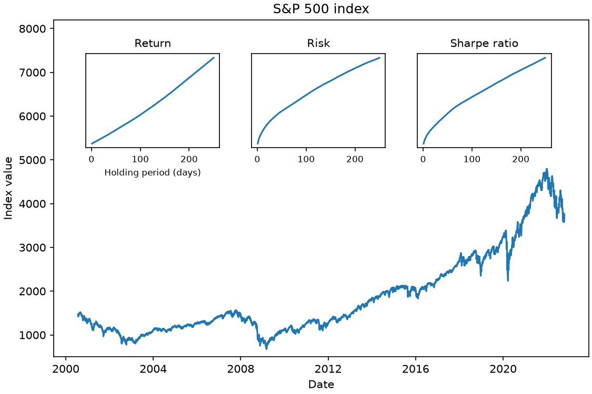

Appendix E — Assignment E: Data Visualization
Instructions
The assignment is worth 100 points. See Canvas for the due date. There is an optional bonus question worth 10 points, so you can score a maximum of 110 (out of 100) points.
You may discuss approaches with classmates, but write your own code and explanations. Put Python computations in Code cells and write the final answer to each question in a Markdown cell.
Download the Assignment E project kit. Extract it and move the extracted
assignment-efolder intostat303-1/assignments/, next to your earlier assignment folders. Check that you did not create a nestedassignment-e/assignment-e/folder. Openstat303-1in VS Code, openassignments/assignment-e/assignment_e.ipynb, and select the course.venvas its kernel. pandas, matplotlib, and seaborn are already installed there.This page contains the complete assignment instructions. The starter notebook contains numbered answer spaces and supplied code. Keep those sections in order, answer every numbered part below, and add your name to the
authorline at the top of the notebook.The data files are in the kit’s
data/folder. Read them with relative path strings such as"data/movies.json"; the notebook runs from theassignment-efolder, so these paths work without changes.Some questions do not have a single correct answer. Visualization is open to interpretation, so any logically sound answer and explanation is acceptable. Label every plot’s axes, and give each figure a title that says what it shows.
Submit one file,
assignment_e.html, to the Assignment E submission in Canvas. Prepare and Submit the HTML at the end of this page explains how to render it.Three of the 100 points are for properly formatting the assignment. The breakdown is as follows:
- Must be an HTML file rendered using Quarto (1 pt).
- There aren’t excessively long outputs of extraneous information (e.g. no printouts of entire data frames without good reason, there aren’t long sections of commented-out code, etc.) (1 pt).
- Final answers of each question are written in Markdown cells, and there is no unnecessary / redundant code or text (1 pt).
Generative AI. You may use generative AI tools (ChatGPT, Claude, GitHub Copilot, and similar) to understand concepts, interpret error messages, and debug code you have written. You may not use them to produce the code or written answers you submit. The test: you should be able to explain every line you submit and reproduce it without assistance. Disclose any use in the AI Use Disclosure section (Question 5). Honest disclosure earns points and carries no penalty on its own; undisclosed use is an academic integrity violation under the course syllabus.
When you place the kit, your assignments folder will look like this:
stat303-1/
├── .venv/
└── assignments/
├── assignment-a/
├── assignment-b/
├── assignment-c/
├── assignment-d/
└── assignment-e/ ← the extracted kit
├── assignment_e.ipynb
├── README.md
└── data/
├── movies.json
└── sp500.csvPoints Summary
| Section | Points |
|---|---|
| 1. Release month, year, and genre | 36 |
| 2. Associations | 28 |
| 3. Directors and distributions | 25 |
| 4. Insights | 6 |
| 5. AI Use Disclosure | 2 |
| 6. Formatting (instruction 8 above) | 3 |
| Total | 100 |
| Bonus: the S&P 500 (optional) | 10 |
1. Release Month, Year, and Genre (36 points)
Throughout the assignment, movies_data holds 3,201 movies read from data/movies.json, and profit means
\[\text{profit} = \text{Worldwide Gross} - \text{Production Budget}.\]
Create a profit column first. A few release dates in this dataset fall in the future (a two-digit-year error in the source); they matter only in Question 1.7, which restricts the years.
The starter supplies the code that reads the data:
movies_data = pd.read_json("data/movies.json")and the function that builds the genre column for Question 1.3:
def combine_genre(major_genre):
"""Collapse the Major Genre values into six broader genres."""
# isinstance(x, str) checks whether x is text. A missing genre is NaN, not
# text, so it is returned unchanged and stays missing.
if not isinstance(major_genre, str):
return major_genre
if "Comedy" in major_genre:
return "Comedy"
if "Thriller" in major_genre:
return "Horror"
if "Action" in major_genre or "Adventure" in major_genre:
return "Action/Adventure"
if "Musical" in major_genre or "Western" in major_genre or "Concert" in major_genre:
return "Musical/Western"
return major_genre
movies_data["genre"] = movies_data["Major Genre"].apply(combine_genre)1.1 Mean profit by month of release (6 points)
Make an appropriate plot of the mean profit of movies released in each calendar month.
Hint: Convert Release Date with pd.to_datetime() and take the month with .dt.month, as in Pandas Fundamentals. Store it in a column named release_month.
1.2 Most and least profitable seasons (2 points)
Based on the plot, which seasons have been the most and the least profitable, on average, for a movie release? Do not compute anything; comment on the plot, using seasons such as early summer or late spring.
1.3 Number of movies per genre and month (8 points)
The starter supplies a function that collapses Major Genre into six broader genres and stores them in a new column, genre. Run it, then make an appropriate plot of the number of movies of each genre released in each calendar month.
Hint: sns.countplot() with hue=, from Data Visualization I.
1.4 Popular genres by season (2 points)
Based on the plot, which genre is the most common during the most profitable season of release, and which during the least profitable season?
1.5 Proportion of genres by month (8 points)
Visualize the proportion of movies in each genre for each month of release, as a 100% stacked bar chart. The starter supplies a pd.crosstab() that computes the proportions, one row per month.
Hints: Counts or composition in Data Visualization I builds this chart on the penguin data: a crosstab drawn with .plot(kind="bar", stacked=True), normalized so every bar reaches 1.0. .plot() returns the Axes it drew into, so ax = genre_proportion_release_month.plot(kind="bar", stacked=True) gives you the handle for ax.legend(bbox_to_anchor=(1.02, 1), loc="upper left"), which puts the legend outside the bars.
The starter supplies:
genre_proportion_release_month = pd.crosstab(index=movies_data["release_month"],
columns=movies_data["genre"],
normalize="index")
genre_proportion_release_month.head()1.6 May and December (2 points)
Which genre is the most common among movies released in May, and which among those released in December?
1.7 Profit by year for each genre (6 points)
Considering only movies released from 1991 to 2010, make a figure of the mean profit of each genre in each year, with a 95% confidence interval, and with each genre in its own panel.
Hints: Take the year with .dt.year. A line in every panel in Data Visualization II is the same figure on the penguin data: a figure-level function with col= and col_wrap=, where kind="line" draws each group’s mean and its 95% confidence band.
1.8 Trends by genre (2 points)
Based on the figure, which genre’s profitability seems to increase over the years, and which has the least uncertainty in profit in most years?
2. Associations (28 points)
These questions use the numeric columns of movies_data, which the visualization chapters call continuous variables.
The starter supplies this code for Questions 2.5 and 2.6:
movies_data["screenplay"] = movies_data["Source"].apply(lambda x: "Non-original" if x != "Original Screenplay" else x)
movies_data["rating"] = movies_data["MPAA Rating"].apply(lambda x: "R rated" if x == "R" else "Not R rated")
movies_data["fiction"] = movies_data["Creative Type"].apply(lambda x: "Contemporary" if x == "Contemporary Fiction" else "other")2.1 Pairplot and heatmap (6 points)
Make a pairplot and a correlation heatmap of all the continuous variables.
2.2 What the pairplot shows (2 points)
Are there any patterns you can see in the pairplot but not in the heatmap?
2.3 Variables associated with profit (2 points)
Based on the plots in Question 2.1, which variables are associated with profit?
2.4 A non-redundant subset (2 points)
Among the variables you listed in Question 2.3, select a subset in which no two are highly associated with each other. Explain why the rest are redundant for explaining profit.
2.5 IMDB votes and profit by genre (8 points)
The starter supplies code that creates the columns screenplay, rating, and fiction. Make an appropriate figure of the association between the number of IMDB votes and profit, with one panel per genre. Which genre shows the strongest association between profit and IMDB votes?
Hint: A figure-level regression plot with col=, from Data Visualization II.
2.6 IMDB votes and profit by fiction type and rating (8 points)
Make an appropriate figure of the association between IMDB votes and profit for each combination of fiction and rating. For which combination is the association strongest?
Hint: Use both row= and col=.
3. Directors and Distributions (25 points)
The starter supplies this code for Question 3.1. Run it after you create director_with_more_than_10_movies:
# Lists the directors from highest to lowest mean profit, for barplot(order=...).
# It uses groupby(), which Data Cleaning introduces; you only need to run it.
director_order = (director_with_more_than_10_movies[["Director", "profit"]]
.groupby("Director").mean()
.sort_values(by="profit", ascending=False)
.index.to_list())3.1 Profit by director (8 points)
Consider the directors who directed more than 10 movies in the dataset. Keep only their movies in a DataFrame named director_with_more_than_10_movies, then make a horizontal bar plot of the mean profit of each director’s movies with its 95% confidence interval, with the director of the highest mean profit at the top.
Hints: value_counts() and isin(), from Pandas Fundamentals, select the directors. To make the bars horizontal, put the category on the vertical axis — y="Director" and x="profit" — as the ordering callout in Data Visualization I describes; with this many directors you will also want a tall figure, plt.figure(figsize=(7, 10)), before the plotting call. The starter supplies code that lists the directors in order of mean profit; pass that list to the bar plot’s order= argument, as countplot(order=...) did there.
3.2 Highest mean and most variation (2 points)
Based on the plot, which director has the highest mean profit, and which has the most variation in profit?
3.3 Box plots of profit by genre (6 points)
Make box plots of the distribution of profit for each genre. Based on the plot, which genre has the most profitable movies?
3.4 Variation by genre (2 points)
Which genre has the most variation in profit, and which has the least?
3.5 Density plots of profit by genre (5 points)
Make density plots of profit for each genre on one panel. Adjust the limits of the horizontal axis so the curves are clearly visible.
Hint: Two relatives of the histogram in Data Visualization I draws one density per group on a single panel with sns.kdeplot(..., hue=...). A handful of extreme profits will stretch the axis, so narrow it with plt.xlim(...) until the curves separate.
3.6 What the density plots add (2 points)
What can you see in the density plots that you could not see in the box plots?
4. Insights (6 points)
4.1 Factors associated with profit (3 points)
From all the visualizations above, describe what you learned about the factors associated with the profitability of a movie.
4.2 How far the findings generalize (3 points)
To what extent can these findings be generalized — for example, to movies released today, or to all Hollywood movies? If not to all of them, to which time period or kind of movie might they apply?
5. AI Use Disclosure (2 points)
In the AI Use Disclosure section of your notebook, state whether generative AI tools were used to complete any part of this assignment.
If no AI was used, write: “I did not use generative AI tools on this assignment.”
If AI was used, you must specify:
- Tool(s) used (e.g., ChatGPT, GitHub Copilot, Claude, etc.)
- How they were used (e.g., explaining a concept, interpreting an error message, debugging code you wrote)
- Where they influenced your work (which questions/sections)
- Edits & verification you made (how you checked correctness, what you modified)
AI Use Template
- Used AI? Yes / No
- Tool(s):
- Purpose / How used (1–3 sentences):
- Scope (which questions/sections):
- Edits & verification (what you changed and how you checked correctness):
Example (for illustration only): - Used AI? Yes - Tools: ChatGPT (free) - How used: Asked what
col_wrapdoes in a seaborn figure-level function, and for help reading a legend that covered the bars. - Scope: 1.5, 1.7. - Edits & verification: Rewrote the plotting code in my own style; checked the proportions in the stacked bars sum to 1 for each month.
Grading (2 points): - 2 points = a clear statement that you did not use AI, or a complete, specific and honest disclosure (tools named, usage and verification described) - 1 point = a disclosure that is vague or missing required details - 0 points = no statement at all, or a disclosure that is misleading
Bonus: The S&P 500 (10 points, optional)
This is an optional question with no partial credit. You will get points only if your solution is completely correct. We advise you to attempt it only when you are done with the rest of the assignment. A loop over the holding periods in Part (c) is allowed.
A market index tracks the performance of a group of stocks; the S&P 500 is often used as a proxy for the US stock market as a whole. A passive investor buys an index fund that follows it and holds it. This question asks how the return and risk of holding the S&P 500 depend on how long you hold it.
data/sp500.csv holds the index from 2000 to 2022. The starter supplies code that reads it, sorts it by date, and stores the closing prices in a NumPy array, close. Use the closing price as the price on each trading day.
- If you buy on day \(t\) and sell \(T\) trading days later, the return is \(r_{t,T} = (P_{t+T} - P_t) / P_t\). Count only trading days: skip dates with no row.
- The risk of a holding period is the standard deviation of its returns.
- The Sharpe ratio is the mean return divided by the risk. (In general it subtracts a risk-free rate from the return; take that rate as 0.)
Answer the following:
For a one-day holding period (\(T = 1\)), compute every possible return with NumPy slicing —
close[1:]againstclose[:-1]— and draw their histogram. Report the mean return, the risk, and the Sharpe ratio.Repeat (a) for a one-year holding period, taking a year as 250 trading days (\(T = 250\)).
For every holding period from 1 to 250 trading days, compute the mean return, the risk, and the Sharpe ratio. Then reproduce the figure below: the index over time, with three small panels showing how the mean return, the risk, and the Sharpe ratio change with the holding period. Small panels inside a larger one are insets, from Data Visualization II. In one or two sentences, say what the figure suggests about holding the index for longer.

Prepare and Submit the HTML
Restart the kernel, run all cells in order, resolve unexpected errors, and save. Render from the assignment folder. The terminal starts in stat303-1, so first move it there with cd assignments and then cd assignment-e, and check the current directory. Then run:
quarto render assignment_e.ipynb --to htmlOpen assignment_e.html and check that your code, output, figures, and written answers are visible. Upload it to Assignment E in Canvas.
This step is graded through the formatting points in instruction 8.